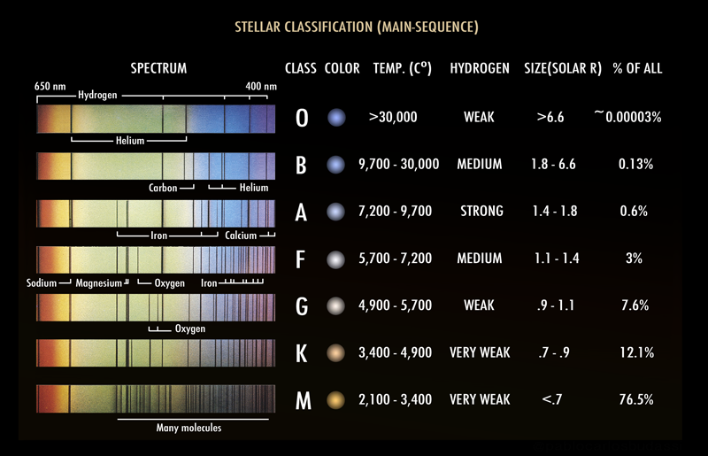

INTRO:
En esta actividad, vas a trabajar con Cecilia Payne.
MATERIALES:
- Imagen 1 de qué elementos químicos hay en los espectros de las estrella

- Imagen 2 del ESPECTRO DEL SOL
- Base de datos de espectros de emisión:
NOTA : 1 nanómetro (nm) = 10 angstroms (Å)
OBJETIVO 1:
- Mira en la Imagen 1 qué elementos químicos se encuentran en los distintos tipos de estrellas.
- Busca la posición en longitud de onda de estas líneas de emisión (en la base de datos de líneas de emisión que prefieras).
- Identifica en la Imagen 2, de espectro del Sol, en qué longitudes de onda (posiciones de líneas de emisión de la base de datos) encontráis líneas oscuras (de absorción) en el espectro del Sol
RESPONDE:
- ¿Qué elementos químicos de la tabla periódica se encuentran en las líneas de absorción del Sol ?
- ¿Que tipo de estrella parece ser el Sol (O, B, A, F, G, K, M)?